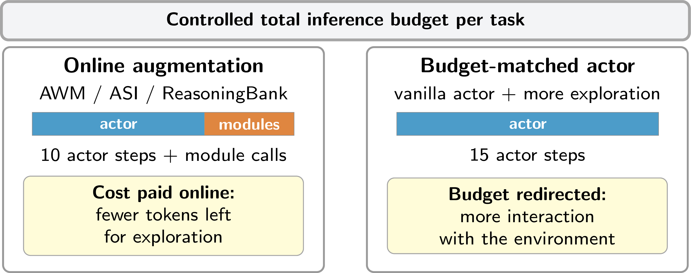
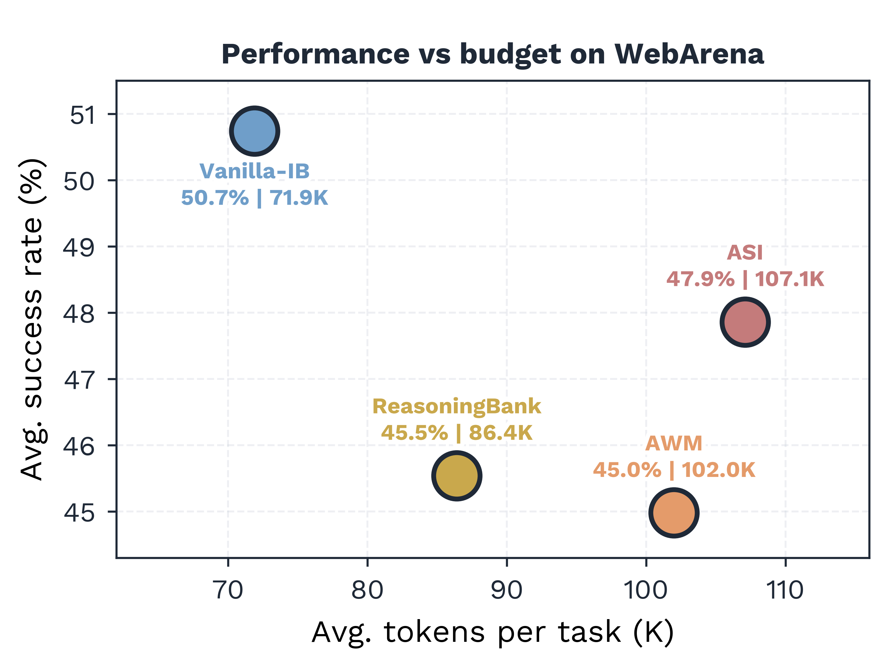

Online web agents often augment a base actor with memory, workflow, or skill (executable code) modules. These modules can improve performance, but they also consume test-time tokens, a cost rarely reported alongside the actor's inference cost. We study online augmentation, where this overhead is paid on every task, and re-evaluate its benefits under a fixed total inference budget.
We compare AWM, ASI, and ReasoningBank with a token-matched vanilla baseline (Vanilla-IB) that uses the same budget for additional actor steps. Across four WebArena domains and three models (Gemini 3 Flash, GPT-5.4-mini, and Qwen 3.6-27B), Vanilla-IB matches or surpasses all three augmentation methods in aggregate success rate while often using fewer total tokens. We observe a similar trend on WorkArena-L1 with Qwen 3.6-27B, indicating that the effect extends to enterprise knowledge-work tasks.
Our results suggest that skills and workflow memory can be useful in specific domains, but their apparent gains often vanish against a budget-matched actor. We further show that run-to-run variance materially affects outcomes and should be reported as a core evaluation criterion for online web agents.


Budget allocation under controlled test-time inference cost.(top) Online augmentation spends part of the budget on workflow, skill, or memory modules, while a budget-matched vanilla actor (Vanilla-IB) spends it on additional observe–act steps.
(bottom) On WebArena with Gemini 3 Flash, Vanilla-IB achieves the highest success rate with fewer tokens than the augmented methods.
Key Findings
1.Prior work compares an augmented agent against a vanilla agent with the same step count, but the augmented agent is spending far more total tokens. When you give the vanilla agent the same overall token budget, the gains largely disappear.
2.Spending the inference budget on more interaction steps, rather than on modules that learn reusable skills or workflows from past trajectories, makes a vanilla agent competitive with, or better than, recent online augmentation methods.
3.Beyond the cost of generating and retrieving skills or memories in online augmentation methods, the retrieved content is inserted into the agent's prompt on every single step, inflating its context regardless of whether the retrieved knowledge is relevant. This hidden per-step overhead cannot be eliminated simply by making the memory module more efficient.
4.Skills (executable code) that are synthesized from past episodes are brittle. When a skill is replayed, it references UI elements by identifiers that are reassigned dynamically after each page interaction.
5.Web agent results are less stable than they appear. The same agent, on the same tasks, can succeed or fail differently across runs due to non-determinism in LLM outputs and web environment noise, and the gap is large enough to flip conclusions about which method wins.
Citation
@article{hajimiri-etal-2026-budget,
title = {Are Online Skill and Memory Modules Always Worth Their Tokens? {A} Budget-Constrained Study of Web Agents},
author = {Hajimiri, Sina and Aminbeidokhti, Masih and Dolz, Jose and Ben Ayed, Ismail and Laradji, Issam H. and Gella, Spandana and Gontier, Nicolas},
journal = {arXiv preprint arXiv:2606.15017},
year = {2026},
}